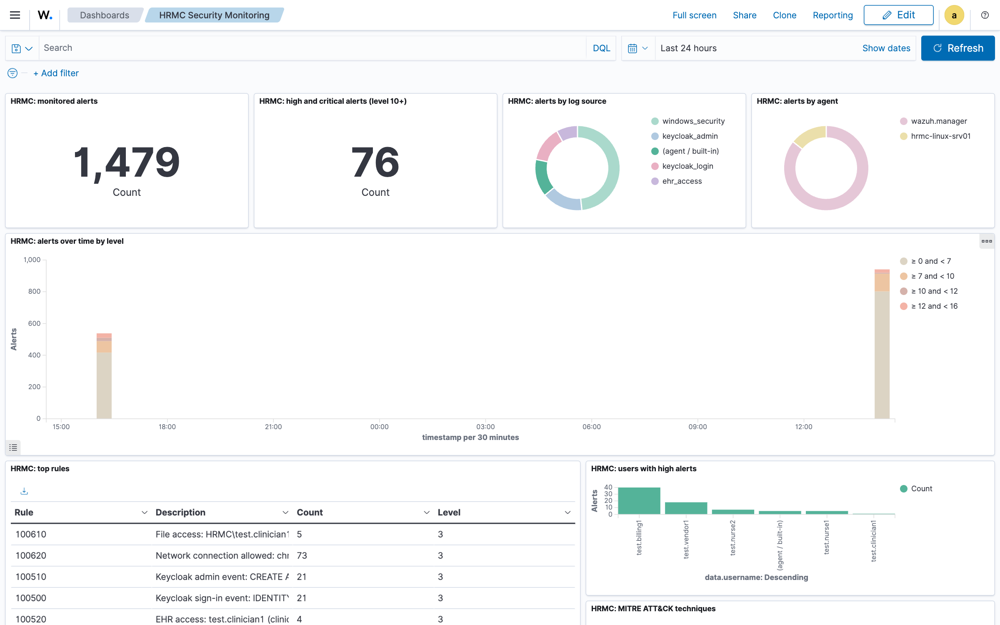
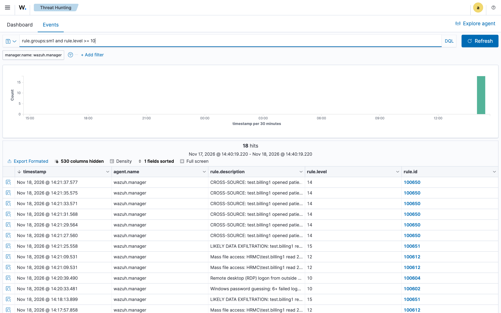

| Prepared by: | Akhila Chennamaneni, IAM & GRC Analyst (author) |
| Organization: | HealthLine Regional Medical Center (HRMC), Care Access Navigator (CAN) capstone |
| Course: | Security Monitoring 1 (DAE 6-Month Cybersecurity, Cohort 2) |
| Rubric criterion: | Criterion 4: Security Reporting |
| Environment: | Wazuh 4.9.2; live Linux agent hrmc-linux-srv01; Windows Security samples (option B, instructor-approved); capstone Keycloak and EHR logs |
| Date: | November 18, 2026 |
"sample": "imported-synthetic". The Linux source is live: a Debian 12 server (hrmc-linux-srv01) runs the official Wazuh agent 4.9.2,
connected to the manager over the agent protocol (port 1514/tcp), and its SSH, file and network activity in this report is real.| Field | 100604 Remote RDP logon from outside | 100612 / 100651 Mass EHR export reads → exfiltration | 100630 Linux connection to a known-bad address |
|---|---|---|---|
| Level / severity | 10 / SEV-3 (SEV-1 if followed by data access) | 12 / 15 → SEV-1 | 12 → SEV-2 |
| Source | Windows Security 4624 | Windows 4663 + 5156 | Linux agent, outbound_tcp command |
| MITRE ATT&CK | T1021.001, T1078 | T1005, T1039, T1041 | T1041 |
| Trigger logic | logon_type 10 and ip not 10.x / 127.x | 20+ reads on EHR_Exports in 60 s by one user; then connection to 203.0.113.0/24 | remote address in 203.0.113.0/24 in the 30 s connection list |
| Triage steps | Is the user expected to work remotely? VPN record? Failures before it? | Which files, which process, where did data go? | Which process holds the socket (ss -tnp)? Who is logged in? |
| False positives | Approved remote support through a jump host | Approved bulk export job (scheduled task, change ticket) | Monitoring or update servers mis-listed |
| Escalation | To Tier 2 if from outside AND followed by access | Incident Commander + Privacy Officer immediately | Tier 2; isolate host if confirmed |
| Response | Disable account, revoke sessions, block IP | Disable account, block IP, preserve file-server logs, start HIPAA assessment | Block egress, isolate container/host, collect volatile data |
| Example in this lab | HRMC\test.billing1 from 203.0.113.77 (19:17:27 UTC) | 30 reads by rclone.exe, then 203.0.113.77:443 (19:18:13) | 172.21.0.6:53766 -> 203.0.113.77:443 (19:16:56) |
| Category | Metric | Value | How it is measured |
|---|---|---|---|
| Operational | Events dropped | 0 | analysisd state file |
| Operational | Mean time to detect (event → alert) | median 1.5 s, max 2.8 s | alert timestamp minus event_time, scenario events |
| Operational | Alert volume (scenario day) | 117 total, 27 at level 10+ | indexer query from scenario start |
| Operational | Notifications sent | 23 | MailHog inbox export |
| Coverage | Log sources | 5 configured; 4 active in the scenario window (Windows samples, Linux agent, Keycloak sign-in, EHR access); Keycloak admin idle (no admin activity, replays on demand) | configured localfiles + agents vs. alerts per data.src |
| Coverage | Scenario types | 3/3 (authentication, file access, network activity) | rules per scenario (section 1.4) |
| Coverage | ATT&CK techniques with a detection | 11: T1005, T1021.001, T1021.004, T1039, T1041, T1070.004, T1078, T1110, T1110.001, T1213, T1485 | rule.mitre.id on alerts that fired |
| Coverage | Servers with an agent | 1/1 (hrmc-linux-srv01) | agent_control |
| Effectiveness | Detection rate | 9/9 = 100% | attack steps with at least one alert |
| Effectiveness | False positives at level 10+ in the normal week | 0 (0.0%) | high alerts with data.src windows_security before the scenario |
| Effectiveness | Rule defects found by testing | 1 (100650 load order), fixed | manager log + re-run |
Overview. Monitoring covered 1 live Linux server, 6 Windows workstations and a file server (imported samples), Keycloak and the EHR. A normal 7-day week was quiet (no high alerts). On 18 November the attack scenario produced 117 alerts in about 6 minutes, 27 of them high or critical.
Alert trend. Windows activity in the normal week followed working days (file reads 34-59 a day, failed logons 0-5 a day) and fell at the weekend; the scenario day spike is entirely the attack (see the trend chart in 3.5 and the dashboard below).
Significant findings.
Recommendations. (1) Block RDP from the internet; require VPN + MFA for remote access. (2) Remove clinical-data access from the billing role (least privilege, capstone RBAC). (3) Use SSH keys and fail2ban-style lockout on Linux servers. (4) Allow-list outbound connections from servers and workstations; alert on sync tools like rclone. (5) Deploy real Windows agents when hosts are available, to replace the imported samples. (6) Keep the health check scheduled and review the dashboard each shift.

